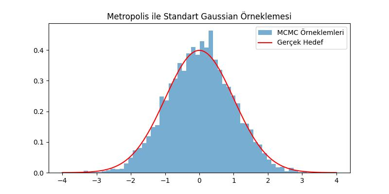
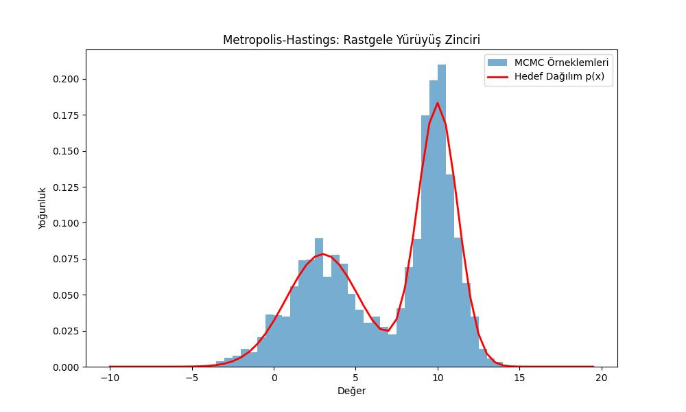
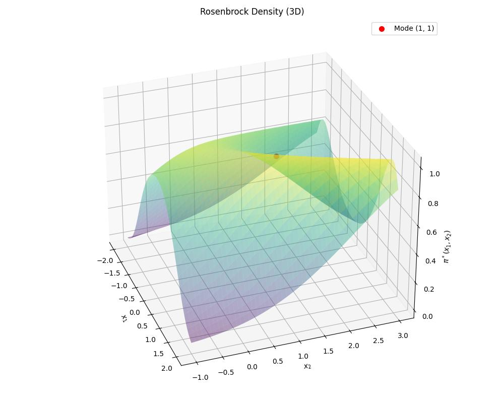
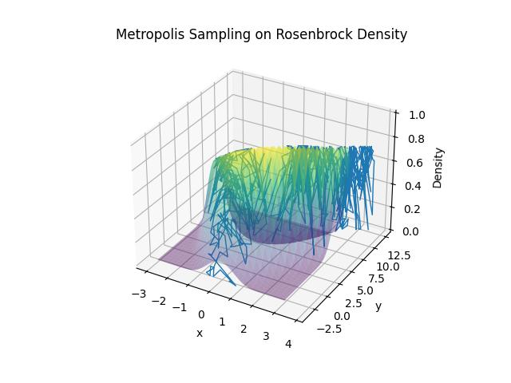

Bir hedef dağılım \(\pi(x)\)’ten örneklem almak istiyoruz, diyelim ki değerlendirebildiğimiz (evaluate) ama doğrudan örnekleyemediğimiz karmaşık bir olasılık dağılımı elimizde var. MH’nin büyük fikri şu: doğrudan örneklemek yerine, uzun vadeli davranışı \(\pi(x)\)’i taklit eden bir Markov zinciri inşa et. Sonra zinciri çalıştırıp konum bilgisini topla [1].
“\(\pi\)’yi değerlendirebiliyoruz ama örnekleyemiyoruz” gibi ifadeler ilk duyulduğunda sezgiye aykırı gelebilir. Peki değerlendirmesi kolay ama örneklemesi zor olan bir dağılıma örnek nedir? Zorluk yalnızca Bayesçi bağlamdan (paydada çözümsüz entegraller yaratan) ibaret değildir. Değerlendirmesi kolay ama doğrudan örneklemesi zor olan pek çok açık, kapalı-form dağılım vardır. İşte çirkin bir karışım örneği. \(\mathbb{R}^{10}\)’da 100 Gaussian’ın karışımını ele alalım:
\[\pi^*(x) = \frac{1}{100} \sum_{k=1}^{100} \mathcal{N}(x \mid \mu_k, \Sigma_k)\]
Bu tamamen açık, normalize edilmiş bir olasılık yoğunluk fonksiyonudur, anında değerlendirilebilir. Ancak örnekleme zordur; çünkü tepeler birbirinden çok uzak ve neredeyse sıfır olasılıklı bölgelerle ayrılmış olabilir. Naif / basit bir örnekleyici bir tepede sıkışır ve diğerlerini hiç keşfedemez. Bu genel soruna çok tepelilik (multi-modal) denir. Asıl sorun ise “boyutluluğun laneti”dir. Daha derin bir sorun olasılıksal yoğunluk fonksiyonlarından örneklemenin standart numaralarının yüksek boyutlarda ise yaramasıdır:
Ters CDF: \(F^{-1}(u)\)’yu hesaplamayı gerektirir; bu da \(\pi^*\)’yi entegre etmek demektir, yüksek boyutta çözümsüzdür.
Reddetme örneklemesi: Her yerde \(q(x) \geq c \cdot \pi^*(x)\) koşulunu sağlayan bir öneri \(q(x)\) gerekir. Yüksek boyutlarda \(\pi^*(x)/q(x)\) oranı neredeyse her yerde astronomik biçimde küçülür; kabul oranı \(d\)’de üstel olarak sıfıra gider.
Izgara tabanlı yöntemler: \(d\) boyutlu uzayı boyut başına \(n\) kutuya bölmek \(n^d\) nokta gerektirir, orta büyüklükteki \(d\) değerleri için bile tamamen olanaksızdır.
Değerlendirilebilirlik bize yerel bilgi verir (bu noktadaki yoğunluk nedir?), örnekleme ise global bilgi gerektirir (yoğunluk uzayın tamamında nasıl davranıyor?). Bu uçurumu kapatmak tam olarak MCMC’nin yaptığı şeydir: yalnızca yerel değerlendirmeleri kullanarak uzayı keşfeden bir Markov zinciri inşa eder.
Ana amacımız bir Markov Zinciri yaratmak ki bu zinciri gezerken \(\pi(x)\)’ten örneklem topluyor olalım. Peki bunu nasıl garanti ederiz? Bir Markov Zincirinin durağan dağılımının \(\pi(x)\) olması için detaylı denge koşulunu tatmin etmek yeterlidir. Bu koşul,
\[ \pi(x) p(x,y) = \pi(y) p(y,x) \]
ki \(p(x,y)\) değeri \(x\) konumundan \(y\) konumuna geçiş olasılığı. \(x\)’ten \(y\)’ye geçebilmek için bir teklif dağılımı \(q(x,y)\)’den bir \(y\) geçişi teklif edilir, bu teklif \(\alpha(x,y)\) olasılığı ile kabul edilir. Bunların sebeplerini ispat kısmında göreceğiz. Yani geçiş olasılığı
\[ p(x,y) = q(y | x) \alpha(x,y) \]
haline gelir, ayni sekilde
\[ p(y,x) = q(x | y) \alpha(y,x) \]
Nihai detaylı denge,
\[ \pi(x)q(y|x)\alpha(x,y) = \pi(y)q(x|y)\alpha(y,x) \]
Eğer öneri dağılımı simetrik ise (Gaussian gibi) o zaman \(q(y|x) = q(x|y)\), formülden elenirler, geriye kalanlar
\[ \pi(x)\alpha(x,y) = \pi(y)\alpha(y,x) \]
Bu noktada kendimize soralım, bir kabul olasılığı değişkeninin sahip olması gereken özellikler nedir? Birinci muhakkak \(0 \le \alpha(x,y) \le 1\). İkincisi, eğer teklif bizi daha yüksek yoğunluklu bir bölgeye götürüyor ise bu teklifi kabul etmek gerekir.
Yani alttaki koşul var ise
\[ \pi(y)\ge\pi(x). \]
En kolay seçim
\[ \alpha(x,y) = 1 \]
olur. Bu seçimin detaylı denge üzerinde etkileri olacaktır,
\[ \pi(x) = \pi(y)\alpha(y,x) \]
Tekrar düzenlersek,
\[ \alpha(y,x) = \frac{\pi(x)}{\pi(y)} \]
İşte kabul oranını elde ettik. Dikkat edersek bu değer otomatik olarak 0 ile 1 arasında çünkü \(\pi(x) \le \pi(y)\).
Ters yone de gidebiliriz. Farz edelim
\[ \pi(x)\ge\pi(y). \]
En kolay seçim
\[ \alpha(y,x) = 1 \]
O zaman
\[ \pi(y) = \pi(x)\alpha(x,y) \]
\[ \alpha(x,y) = \frac{\pi(y)}{\pi(x)} \]
Simdi \(\alpha(x,y)\) nedir sorusuna donersek, ustteki iki farkli senaryoyu biraraya getirirsek,
\[ \alpha(x,y)= \begin{cases} 1, & \pi(y)\ge\pi(x), \\ \dfrac{\pi(y)}{\pi(x)}, & \pi(y)<\pi(x). \end{cases} \]
Bu ifade bize bir diger matematiksel formulu hatirlatabilir, bu \(\min\) ifadesi. Genel olarak \(\min\) nedir?
\[ \min(a,b)= \begin{cases} a, & a\le b,\\ b,& b < a \end{cases} \]
Bunu iki üstteki formüle uygularsak,
\[ \alpha(x,y) = \min\left(1,\frac{\pi(y)}{\pi(x)}\right) \]
Metropolis Yöntemi: Temel Mantık
Metropolis algoritması, karmaşık bir \(\pi(x)\) hedef dağılımından doğrudan örneklem çekemediğimizde imdadımıza yetişir. Yöntemin kalbi şu 3 adımdan oluşan döngüye dayanır:
Aday Önerisi (Proposal): Mevcut konumumuz \(x\) iken, kolayca örnekleyebileceğimiz simetrik bir \(q(y|x)\) dağılımından (örneğin mevcut konuma Gaussian gürültüsü ekleyerek: \(y = x + \mathcal{N}(0, \sigma^2)\)) yeni bir \(y\) adayı öneririz.
Kabul Oranı (Acceptance Ratio) Hesaplama: Önerilen noktanın mevcut noktaya göre ne kadar “iyi” olduğunu anlamak için hedef yoğunlukların oranına bakarız:
\[\alpha(x,y) = \min\left(1, \frac{\pi(y)}{\pi(x)}\right)\]
Basit Bir Örnek: Standart Gaussian Dağılımından Örnekleme
Metropolis mantığını görmek için hedefimizin sadece standart bir normal dağılım (\(\mu=0, \sigma=1\)) olduğu en basit senaryoyu kodlayalım:
import numpy as np
import matplotlib.pyplot as plt
# 1. Hedef Dağılım (Normalleştirme sabiti olmadan sadece şekli yeterli!)
def hedef_pi(x):
return np.exp(-0.5 * x**2)
# Parametreler
N = 10000
adim_genisligi = 0.5
zincir = np.zeros(N)
zincir[0] = 5.0 # Kötü bir başlangıç noktası seçelim (Dağılımın çok uzağı)
# Metropolis Döngüsü
for i in range(N-1):
mevcut = zincir[i]
# Adım 1: Rastgele bir aday öner (Simetrik Gaussian Rastgele Yürüyüş)
aday = mevcut + np.random.normal(0, adim_genisligi)
# Adım 2: Kabul oranını hesapla (Z'ler zaten yok, pi'ler oranlanıyor)
alpha = min(1, hedef_pi(aday) / hedef_pi(mevcut))
# Adım 3: Kabul / Ret mekanizması
if np.random.uniform(0, 1) < alpha:
zincir[i+1] = aday
else:
zincir[i+1] = mevcut
# Görselleştirme
plt.figure(figsize=(8, 4))
plt.hist(zincir[1000:], bins=50, density=True, alpha=0.6, label='MCMC Örneklemleri')
x_ekseni = np.linspace(-4, 4, 200)
plt.plot(x_ekseni, 1/np.sqrt(2*np.pi)*np.exp(-0.5 * x_ekseni**2), 'r', label='Gerçek Hedef')
plt.title("Metropolis ile Standart Gaussian Örneklemesi")
plt.legend()
plt.savefig('stat_097_mcmc_04.jpg')
Zincire Kaydedilenler
Üstteki koda dikkat edilirse her adımda zincir[i+1] ile
zincire kayıt yapılıyor, bu öneri kabul edilsin / edilmesin muhakkak
yapılıyor. Eğer öneri kabul edilirse yeni adımın kaydedilmesini bekleriz
fakat ret durumunda niye kayıt yapılıyor acaba? Bu aslında istatistiki
olarak doğru bir adım. Eğer öneri red edilmişse, o an üzerinde olduğumuz
noktanın yine kaydedilmesini isteriz çünkü bu yüksek olasılığı olan bir
bölgede olduğumuzun işareti olacaktır. O bölgedeki noktaların frekansı
zincir üzerinde artarsa bu bizim için doğru bir sonuç olur, çünkü bu
frekans artışı o zincir üzerinden bizim döngü bittiğinde yapacağımız
özet istatistiklerine direk yansır. Eğer zincirde 10 değeri etrafında
bir sürü değer var ise, zincir değerlerinde mean hesabı
yapınca 10’a yakın bir sonuç elde edebiliriz.
MH Yakınsaklığının Kanıtı
Bu görev için durağanlık, indirgenemezlik ve aperiyodikliğin kanıtlanması gerekir. Durağanlık için geçişlerin Markov özelliğine sahip olması gerekir; gelecek yalnızca bugüne bağlıdır. Bu kalem oldukca basit, eğer bir sonraki adım için sadece o andaki konum bilgisini kullanırsak bunu otomatik olarak elde etmiş oluruz.
Ayrıntılı denge üzerinden durağanlığı elde ederiz. Ancak durağanlık tek başına, zincirin rastgele bir başlangıç noktasından \(\pi\)’ye yakınsadığını garanti etmez. Bunlara ek olarak şunlar gerekir:
İndirgenemezlik: Zincir, pozitif olasılıklı herhangi bir bölgeye her yerden ulaşabilmelidir. Bu olmazsa birden fazla durağan dağılım olabilirdi (her bağlantısız bileşen için bir tane) ve hangisinde sonuçlanacağınız başlangıç noktanıza bağlı olurdu. Gaussian öneri kullanan MH’de indirgenezlik neredeyse bedavaya gelir; Gaussian her yere ulaşabilirlik sağlar.
Aperiyodiklik: Zincir bir döngüde salınmamalıdır. \(A \to B \to A \to B \to \cdots\) şeklinde giden bir zincirin \(\pi\) durağan dağılımı olabilir, ama ergodik anlamda asla ona yakınsamaz. MH bunu “yerinde kal” adımıyla otomatik olarak çözer: bir öneri reddedildiğinde mevcut durum tekrar sayılır. Bu öz-döngü her türlü periyodu kırar.
İndirgenemezlik + aperiyodiklik + durağanlık bize ergodikliği verir,
\[\frac{1}{T} \sum_{t=1}^{T} f(x_t) \xrightarrow{T \to \infty} \mathbb{E}_\pi[f]\]
başlangıç noktası \(x_0\)’dan bağımsız olarak. Gerçek kazanım bu, yalnızca \(\pi\)’nin durağan olması değil, zinciri çalıştırmanın \(\pi\)’nin kendisinden örneklem vermesi.
\(\alpha\) yapısı ayrıntılı dengeyi güvence altına alır. Gaussian öneri ile reddet/yerinde-kal mekanizması, indirgenemezliği ve aperiyodikliği neredeyse bedavaya güvence altına alır (bu sebeple [1] yazısında bu konuya çok vurgu yapıldığını görmüyoruz, arka planda sessizce işlerini yapıyorlar)
Durağanlık
Ayrık durumda durağan bir dağılım şu koşulu sağlar:
\[\pi(j) = \sum_i \pi(i)\, p_{ij}\]
Sürekli durumda bu şöyle olur:
\[\pi(y) = \int \pi(x)\, p(x, y)\, dx\]
\(\pi\)’nin durağan dağılımı olacağı bir \(p(x, y)\) inşa etmek istiyoruz. Bu temel hedef.
Durağanlık için ispat edilmesi, kullanılması daha kolay olan yeterli bir koşul ayrıntılı denge olarak adlandırılır:
\[\pi(x)\, p(x, y) = \pi(y)\, p(y, x)\]
Bu şunu söyler: \(x\)’te olup \(y\)’ye atlama olasılığı, \(y\)’de olup \(x\)’e atlama olasılığına eşittir. İki durum arasındaki akış her iki yönde dengelenmiştir. Bunun durağanlığı ima ettiğini, her iki tarafı da \(x\) üzerinden entegre ederek doğrulayabiliriz:
\[ \int \pi(x)\, p(x, y)\, dx = \int \pi(y)\, p(y, x)\, dx \]
\[ = \pi(y) \int p(y, x)\, dx = \pi(y) \]
Bu tam olarak durağanlık koşuludur. Not: \(\int p(y,x)\,dx = 1\); çünkü \(p(y,x)\) bir geçiş yoğunluğu ve tüm olası sonraki durumlar üzerinden entegre edilince toplam olasılık 1 vermeli.
Dolayısıyla hedef \(\pi\)’ye göre ayrıntılı dengeyi sağlayan bir geçiş kuralı \(p(x,y)\) inşa edebilirsek işimiz biter.
Öneri Dağılımı
Bir öneri dağılımı \(q(y \mid x)\) tanıtıyoruz, mevcut durum \(x\)’e koşullu olarak örnekleyebileceğimiz basit bir dağılım. Bunu şöyle düşünebiliriz: “\(x\)’teyken bir sonraki sıçramayı nereye düşünmeliyim?” Yaygın bir seçim, mevcut konuma Gaussian gürültüsü eklemektir:
\[y = x + \mathcal{N}(0, \sigma^2)\]
Öneriyi her zaman kabul etseydik, zincir \(\pi\)’ye göre değil \(q\)’ya göre yürürdü. Dolayısıyla bir düzeltmeye ihtiyacımız var.
Kabul Kriteri
Öneri yoğunluğu \(q\)’nun kendi başına ayrıntılı dengeyi sağlamadığını varsayalım. Örneğin:
\[q(y \mid x)\, \pi(x) > q(x \mid y)\, \pi(y)\]
yani \(x\)’ten \(y\)’ye çok sık atlıyoruz. Bunu düzeltmek için sıçramayı her zaman kabul etmiyoruz. \(\alpha(x, y)\) olasılığıyla kabul ediyoruz; bu olasılığı dengeyi yeniden sağlayacak şekilde seçiyoruz:
\[\pi(x)\, q(y \mid x)\, \alpha(x, y) = \pi(y)\, q(x \mid y)\]
En iyi çözüm,
\[\alpha(x, y) = \min\!\left(1,\, \frac{\pi(y)\, q(x \mid y)}{\pi(x)\, q(y \mid x)}\right)\]
Kabaca olanları anlamak basit: önerilen \(y\) durumu \(\pi\) altında mevcut \(x\) durumundan daha yüksek olasılığa sahipse her zaman kabul et. Daha düşükse yalnızca bazen kabul et, ne kadar düşük olduğuyla orantılı olarak. Bu, “yanlış” yöndeki hareketleri dengeyi yeniden sağlayacak kadar düşürür.
Özetle, geçiş yoğunluğu şöyle yazılır:
\[p_{\text{MH}}(x, y) = \alpha(x, y)\, q(y \mid x), \quad x \neq y\]
Metropolis Özel Durumu
Öneri simetrikse, yani \(q(y \mid x) = q(x \mid y)\), Gaussian gürültüde olduğu gibi, \(q\) terimleri sadeleşir ve kabul şu hale gelir:
\[\alpha(x, y) = \min\!\left(1,\, \frac{\pi(y)}{\pi(x)}\right)\]
Bu orijinal Metropolis algoritmasıdır. MH ise bunun asimetrik önerilere genellemesidir.
Algoritma
Yeterince uzun süre çalıştıktan sonra ziyaret edilen durumlar \(\pi\)’ye göre dağılmış olur. Isınma süresi, zincirin nereden başladığını “unutmadan” önceki başlangıç sürecidir, bu örnekler henüz \(\pi\)’yi temsil etmediğinden atılır.
Not: \(\alpha(x, y)\) hesaplandıktan sonra onu birörnek dağılımdan alınan sayı ile karşılaştırmak önemli, ancak o şekilde \(\alpha\) olasılığına bağlı zar atabilmiş oluyoruz. Eğer \(\alpha\) değeri 0.2 ise 10 örneklem içinden 2 tane kabul olmalı 8 tane ret olmalı. Bunu tarif edilen örneklem aşaması ile gerçekleştirmiş oluyoruz.
Normalleştirme Sabitinden Kurtulmak
Bayes usulü analizde veya karmaşık fizik modellerinde hedef dağılımımız genellikle \(\pi(x) = \frac{\pi^*(x)}{Z}\) biçimindedir. Burada \(\pi^*(x)\) formülünü kolayca hesaplayabildiğimiz ham fonksiyon, \(Z\) ise hesaplaması imkansız olan normalleştirme sabitidir (entegral veya payda).
Metropolis yönteminin asıl dehası kabul oranında gizlidir. Orana koyduğumuzda \(Z\) sabiti tamamen sadeleşir:
\[ \alpha(x,y) = \min\left(1, \frac{\pi^*(y) / Z}{\pi^*(x) / Z}\right) = \min\left(1, \frac{\pi^*(y)}{\pi^*(x)}\right) \]
Yani dağılımın uzayda toplamda 1’e entegre olup olmaması MCMC’nin umurunda değildir; algoritma sadece o an tırmandığı tepelerin birbirine oranına (eğimine) bakar.
Önsel (Prior) Seçimiyle Sınırları Yönetmek. Aynı sadeleşme mantığı Bayes modellerinde parametrelere sınır koymak için de mükemmel bir araçtır. Diyelim ki sonsal (posterior) dağılımdan örneklem çekiyoruz. Bayes kuralı gereği \(\text{Sonsal} \propto \text{Olabilirlik (Likelihood)} \times \text{Önsel (Prior)}\) olduğunu biliyoruz.
Kabul oranını yazarken bu çarpımı kullanırız. Eğer bulmaya uğraştığımız bir katsayının muhakkak belli bir aralıkta kalmasını istiyorsak bunu onsel dağılıma birörnek (uniform) bir sınır koyarak çözebiliriz. Aday adım bu sınırların dışına çıktığı an önsel değeri \(0\) (log uzayında \(-\infty\)) döndürebilir, bu da \(\alpha\) kabul oranını anında sıfırlayarak zincirin o yasaklı bölgeye basmasını engeller. Algoritma içerisinde olasılıkların çarpımı yerine sayısal taşmaları önlemek için logarıtmik toplamlar (\(\ln(\text{Likelihood}) + \ln(\text{Prior})\)) kullanılabilir.
Biraz önce önsel dağılımlarda sınır tanımlamaktan bahsettik, bunu sıfır log uzayda sonsuz değer döndürerek yapabiliyoruz. Fakat bu durum 1’e entegre olması gereken dağılımlar bağlamında problem çıkarmıyor mu? Olmuyor, nedeninden bahsedelim. Önsel ve olurluk fonksiyonlarının kendi içlerinde de olasılık dağılımı olmalarından kaynaklanan normalleştirme sabitleri (örneğin Gaussian formülünün başındaki \(\frac{1}{\sigma\sqrt{2\pi}}\) gibi ifadeler) var. Bu sabitleri \(c_{\text{olurluk}}\) ve \(c_{\text{önsel}}\) olarak ayıralım ve fonksiyonları ham halleriyle yazalım:
\(P(D | \theta) = c_{\text{olurluk}} \times P^*(D | \theta)\)
\(P(\theta) = c_{\text{önsel}} \times P^*(\theta)\)
Şimdi bu ifadeleri Metropolis kabul oranına (\(\alpha\)) yerleştirelim ve mevcut bir \(\theta_{\text{mevcut}}\) konumundan önerilen bir \(\theta_{\text{aday}}\) konumuna geçiş cebirini inceleyelim:
\[\alpha = \min\left(1, \frac{\pi(\theta_{\text{aday}})}{\pi(\theta_{\text{mevcut}})}\right) = \min\left(1, \frac{\frac{P(D | \theta_{\text{aday}}) P(\theta_{\text{aday}})}{P(D)}}{\frac{P(D | \theta_{\text{mevcut}}) P(\theta_{\text{mevcut}})}{P(D)}}\right)\]
Paydadaki hesaplanamaz \(P(D)\) terimleri parametreye bağlı olmadıkları için birbirini doğrudan götürür:
\[\alpha = \min\left(1, \frac{P(D | \theta_{\text{aday}}) P(\theta_{\text{aday}})}{P(D | \theta_{\text{mevcut}}) P(\theta_{\text{mevcut}})}\right)\]
Şimdi fonksiyonların içindeki normalleştirme sabitlerini de yerine koyalım:
\[ \alpha = \min\left(1, \frac{\left[c_{\text{olurluk}} \times P^*(D | \theta_{\text{aday}})\right] \times \left[c_{\text{önsel}} \times P^*(\theta_{\text{aday}})\right]}{\left[c_{\text{olurluk}} \times P^*(D | \theta_{\text{mevcut}})\right] \times \left[c_{\text{önsel}} \times P^*(\theta_{\text{mevcut}})\right]}\right) \]
Görüldüğü üzere hem olurluktan gelen \(c_{\text{olurluk}}\) sabitleri hem de önselden gelen \(c_{\text{prior}}\) sabitleri kesrin pay ve paydasında sadeleşir. Sonuç olarak kabul oranı sadece ham fonksiyonların çarpımına eşitlenir:
\[\alpha = \min\left(1, \frac{P^*(D | \theta_{\text{aday}}) \times P^*(\theta_{\text{aday}})}{P^*(D | \theta_{\text{mevcut}}) \times P^*(\theta_{\text{mevcut}})}\right)\]
Yani MCMC simülasyonu yaparken ne \(P(D)\) paydasını entegre etmek zorundayız ne de önsel dağılımın alanının 1’e eşit olmasını sağlayan o karmaşık katsayıları hesaplamak zorundayız. Algoritma sadece o an tırmandığı tepelerin birbirine oranına (eğimine) bakar. Bu yüzden kod yazarken önsel dağılımın sadece “şeklini” korumamız matematiksel olarak tamamen geçerlidir.
Örnek: Gaussian Karışımı
Alttaki örnek [3, sf. 336]’dan alınmıştır, iki Gaussian karışımından örneklem almayı başarıyor.
import numpy as np
import matplotlib.pyplot as plt
# Örneklemek istediğimiz hedef dağılım (Bimodal Gauss Karışımı)
def p(x):
mu1 = 3; mu2 = 10; v1 = 10; v2 = 3
return 0.3 * np.exp(-(x - mu1)**2 / v1) + 0.7 * np.exp(-(x - mu2)**2 / v2)
# Parametreler
adim_boyutu = 0.5
x = np.arange(-10, 20, adim_boyutu)
px = p(x)
N = 5000 # Örneklem sayısı
# Rastgele Yürüyüş (Random Walk) Metropolis-Hastings
u2 = np.random.rand(N)
sigma_rw = 10 # Rastgele yürüyüşün adım genişliği
y2 = np.zeros(N)
y2[0] = np.random.normal(0, sigma_rw) # Başlangıç durumu
for i in range(N - 1):
# Mevcut duruma bağlı olarak yeni bir aday durum öner (Rastgele Yürüyüş)
y2new = y2[i] + np.random.normal(0, sigma_rw)
# Kabul olasılığını hesapla (alpha)
# Öneri dağılımı simetrik olduğu için q(y|y_yeni) / q(y_yeni|y) = 1 olur.
alpha = min(1, p(y2new) / p(y2[i]))
# Kabul etme veya reddetme adımı
if u2[i] < alpha:
y2[i+1] = y2new
else:
y2[i+1] = y2[i]
# Görselleştirme: Rastgele Yürüyüş Zinciri
plt.figure(figsize=(10, 6))
# density=True kullanarak histogramı olasılık yoğunluğuna normalize ediyoruz
plt.hist(y2, bins=x, density=True, alpha=0.6, label='MCMC Örneklemleri')
# Hedef dağılımı normalize ederek çizdiriyoruz (np.trapezoid kullanımı)
plt.plot(x, px / np.trapezoid(px, x), color='r', linewidth=2, label='Hedef Dağılım p(x)')
plt.title("Metropolis-Hastings: Rastgele Yürüyüş Zinciri")
plt.xlabel("Değer")
plt.ylabel("Yoğunluk")
plt.legend()
plt.savefig('stat_097_mcmc_03.jpg')
Örnek: Rosenbrock
Bir yoğunluk fonksiyonu yaratalım, onun üzerinden alttaki örneği kodlayacağız.
\[ \pi^*(x_1, x_2) = \frac{1}{Z} \exp\!\left(-\frac{f(x_1, x_2)}{20}\right), \quad Z = \int \exp\!\left(-\frac{f(x_1, x_2)}{20}\right) dx \]
Geçerli bir yoğunluk için iki koşul gerekli: 1) Negatif olmama: \(\pi^*(x) \geq 0\), evet, üstel bunu garanti eder çünkü \(\exp(\cdot) > 0\) her zaman. 2) 1’e entegre olma: \(\int \pi^*(x)\, dx = 1\), burada \(\propto\) sembolü önemli iş yapıyor. Ham \(\exp(-f/20)\) zorunlu olarak 1’e entegre olmaz, dolayısıyla örtük bir normalleştirme sabiti \(Z\) vardır:
MH’nin güzelliği burada: \(Z\)’yi hiç hesaplamak zorunda değilsiniz. Kabul oranı şöyledir:
\[\alpha(x, y) = \min\!\left(1,\, \frac{\exp(-f(y)/20)/Z}{\exp(-f(x)/20)/Z}\right)\]
\(Z\)’ler sadeleşir; dolayısıyla MH yalnızca normalleştirme sabitine kadar bilinen dağılımlardan örnekleyebilir.
exp, normalleştirmeyi hesaplamayı kolaylaştırmaz.
Rosenbrock yoğunluğu için \(Z\)’nin
kapalı formu yoktur. exp’in kullanılmasının asıl nedeni
entegralin sonlu olmasını (yani \(Z <
\infty\)) güvence altına almaktır. \(f(x_1, x_2) \geq 0\) her yerde
sağlandığından:
\[\exp\!\left(-\frac{f(x_1, x_2)}{20}\right) \in (0, 1]\]
dolayısıyla entegre edilen 1 ile sınırlı ve moddan uzaklaştıkça 0’a
yaklaşır; bu da entegrali sonlu kılar. \(f\)’yi doğrudan yoğunluk olarak
kullansaydınız, \(f \geq 0\) sınırsız
büyüdüğünden anında başarısız olurdu. Özetle exp üç şey
yapar: 1) Pozitifliği garanti eder 2) Manzarayı çevirir (küçük \(f\) → yüksek yoğunluk) 3) Aralığı \((0,1]\)’e sıkıştırır; entegrali sonlu
kılar
1’e gerçek normalleştirme ise \(Z\)’ye bölmektir; MH’nin bunu hesaplaması gerekmez.
Kod
a, b = 1, 3
x1 = np.linspace(-2, 2, 500)
x2 = np.linspace(-1, 3, 500)
X1, X2 = np.meshgrid(x1, x2)
Z = np.exp(-((a - X1)**2 + b*(X2 - X1**2)**2) / 20)
fig = plt.figure(figsize=(10, 8))
ax = fig.add_subplot(111, projection='3d')
ax.plot_surface(X1, X2, Z, cmap='viridis', linewidth=0, antialiased=True,alpha=0.4)
ax.scatter(a, a**2, 1.0, color='red', s=50, zorder=5, label=f'Mode ({a}, {a**2})')
ax.set_xlabel('$x_1$')
ax.set_ylabel('$x_2$')
ax.set_zlabel('$\\pi^*(x_1, x_2)$')
ax.set_title('Rosenbrock Yogunlugu')
ax.view_init(azim=340, elev=30)
ax.legend()
plt.tight_layout()
plt.savefig('stat_097_mcmc_01.jpg')
from numpy.random import multivariate_normal as mvn
from mpl_toolkits.mplot3d import Axes3D
n_iters = 1000 # Metropolis adımlarının sayısı
proposal_var = 0.1 # öneri varyansı
burn_in = 100 # erken örnekleri at
a,b = 1,4
def rosen(x, y): return np.exp( -((a - x)**2 + b*(y - x**2)**2) / 20)
samples = np.empty((n_iters, 2))
# Rastgele başlangıç noktası
samples[0] = np.random.uniform(low=[-3, -3],high=[3, 10],size=2 )
for i in range(1, n_iters):
curr = samples[i - 1]
# Yeni nokta öner
prop = curr + mvn(mean=np.zeros(2),cov=np.eye(2) * proposal_var)
# Kabul olasılığı
alpha = min(1, rosen(*prop) / rosen(*curr))
# Kabul et ya da reddet
if np.random.uniform() < alpha:
curr = prop
samples[i] = curr
# Burn-in'i çıkar
samples = samples[burn_in:]
x = np.linspace(-3, 3, 60)
y = np.linspace(-3, 10, 60)
X, Y = np.meshgrid(x, y)
Z = rosen(X, Y)
# Örnek yükseklikleri
Z_samples = rosen(samples[:, 0], samples[:, 1])
fig = plt.figure()
ax = fig.add_subplot(111, projection='3d')
# Yüzey
ax.plot_surface(X, Y, Z, cmap='viridis', linewidth=0, antialiased=True,alpha=0.4)
ax.plot(samples[:, 0],samples[:, 1],Z_samples,linewidth=1)
ax.set_xlabel("x")
ax.set_ylabel("y")
ax.set_zlabel("Density")
plt.title("Rosenbrock Yogunlugu Uzerinde Metropolis Orneklemesi")
plt.savefig('stat_097_mcmc_02.jpg')
Üstteki grafikte Rosenbrock yoğunluğunun nasıl gezildiğini görüyoruz, mavi çizgilerin her biri önceki bir konumdan diğer sonraki konuma geçişi gösteriyor, bu geçişler sırasında durağan dağılımdan örneklemler toplamış oluyoruz.
Gibbs Örneklemesi
Gibbs örneklemesi, Metropolis-Hastings’in özel bir durumudur [2]; yeni önerilen durum her zaman bire eşit olasılıkla kabul edilir. \(D\) boyutlu bir sonsal dağılımı \(x = (x_1, \ldots, x_D)\) parametreleriyle ele alalım. Gibbs örneklemesinin temel fikri, \(x_{-d}\)’nin \(d\)-inci parametre olmaksızın \(x\) olduğu koşullu dağılım \(\pi(x_d \mid x_{-d}, X)\)’ten yinelemeli olarak örneklemektir.
Algoritma
\(t = 1, \ldots, T\) için:
Üsttekinin neden çalıştığını görmek için
\[\pi(x \mid X) = \pi(x_d, x_{-d} \mid X) = \pi(x_d \mid x_{-d}, X)\,\pi(x_{-d} \mid X)\]
olduğuna dikkat edelim. Geçiş olasılığı, daha önceki notasyona da bağlı kalacak şekilde, şu şekilde yazılabilir,
\[\alpha(x, y) = \min\left\{1, \frac{\pi(y) \pi(x_d | x_{-d}, X)}{\pi(x) \pi(y_d | y_{-d}, X)}\right\}\]
Dikkat edersek \(q\) simdi \(\pi\), Gibbs örneklemesinde öneri dağılımı koşulun kendisi seçilir:
\[q(y \mid x) = \pi(y_d \mid x_{-d}, X)\]
“yani \(d\) koordinatı için yeni bir değer önerirken, diğer tüm koordinatları sabit tutarak (yani \(y_{-d} = x_{-d}\)) doğrudan koşullu dağılımından örnekleme yaparsınız.”
Ters yönde, \(q(x \mid y)\): \(y\)’deyken \(x\)’e geçmeyi önerirsek, aynı mekanizma geçerli; \(d\) dışındaki tüm koordinatları \(y_{-d}\)’de sabit tutup \(x_d\)’yi koşullu dağılımdan çekiyoruz. Dolayısıyla:
\[q(x \mid y) = \pi(x_d \mid y_{-d}, X)\]
Not: \(y_{-d} = x_{-d}\) olduğundan (Gibbs adımı diğer koordinatları hiçbir zaman değiştirmez), bu şu hale gelir:
\[q(x \mid y) = \pi(x_d \mid y_{-d}, X) = \pi(x_d \mid x_{-d}, X)\]
Bunları genel MH kabul oranına koyarsak:
\[ \alpha(y \mid x) = \min\!\left(1,\, \frac{\pi(y)\, q(x \mid y)}{\pi(x)\, q(y \mid x)}\right) = \min\!\left(1,\, \frac{\pi(y)\,\pi(x_d \mid y_{-d}, X)}{\pi(x)\,\pi(y_d \mid x_{-d}, X)}\right) \]
\(\pi(y) = \pi(y_d \mid y_{-d}, X)\,\pi(y_{-d} \mid X)\) ve \(\pi(x) = \pi(x_d \mid x_{-d}, X)\,\pi(x_{-d} \mid X)\) açılımını kullanarak ve \(y_{-d} = x_{-d}\) olduğundan her şey sadeleşir:
\[= \min\!\left(1,\, \frac{\pi(y_d \mid y_{-d}, X)\,\pi(y_{-d} \mid X)\,\pi(x_d \mid x_{-d}, X)}{\pi(x_d \mid x_{-d}, X)\,\pi(x_{-d} \mid X)\,\pi(y_d \mid y_{-d}, X)}\right) = 1\]
Demek ki öneriler her zaman kabul edilecek.
Gibbs örneklemesinin her adımında, önerilen sonraki durum her zaman geri dönüşlülük kısıtını sağlayan bir Metropolis-Hastings benzeri rastgele yürüyüş gerçekleştiriyoruz.
Gibbs örneklemesinin temel avantajı basittir: öneriler her zaman kabul edilir. Temel dezavantajı ise yukarıdaki koşullu olasılık dağılımlarını türetebilmemiz gerektiğidir. Bu, öncelin sonsal ile eşlenik olduğu durumlarda kolay idare edilebilir.
Gibbs örneklemesini yalnızca Metropolis-Hastings algoritmasının özel bir durumu olarak görebiliriz. Her iki algoritmanın da kavramsal açıdan zor kısmı, geri dönüşlülük kısıtının doğruluğunu ve örtük bir Markov zincirinin durağan dağılımı olması garantili bir dağılımı nasıl belirleyebileceğimizi anlamaktır.
Not: Yukarıdaki ispat, Gibbs örneklemesinde önerilerin her zaman kabul edileceğini (\(\alpha=1\)) gösterdi. Metropolis-Hastings bağlamında ise genellikle reddetme mekanizmasının (öneri reddedilince yerinde kalma) aperiyodikliği garanti ettiğini belirtmiştik. Peki reddetme olmadan aperiyodiklik nasıl sağlanıyor? MH cebiri bize şunu söyler: “Herhangi bir öneri dağılımı \(q\) kullanabilirsin, kabul oranını buna göre ayarla.” Gibbs’te biz \(q\)’yu koşullu dağılım olarak seçtiğimizde, cebirsel olarak ayarlanacak bir şey kalmıyor (\(\alpha=1\)). Bu seçim, reddetme mekanizmasına ihtiyaç duymadan, geçiş çekirdeğinin kendisi üzerinden ergodikliği (indirgenemezlik ve aperiyodiklik) sağlar. Yani MH kuralları içinde kalarak, reddetme olmadan da yakınsama garantisi verebiliriz; çünkü aperiyodiklik reddetmeye değil, seçilen \(q\)’nun yapısına bağlıdır.
Kaynaklar
[1] Gundersen, Why Metropolis–Hastings Works
[2] Gundersen, Gibbs Sampling Is a Special Case of Metropolis–Hastings
[3] Marsland, Machine Learning An Algorithmic Perspective